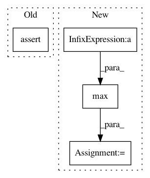

6d854ec8c54e0eb0a73635f41b0598f2d2231069,niftynet/engine/windows_aggregator_base.py,ImageWindowsAggregator,crop_batch,#Any#Any#Any#,71
Before Change
spatial_shape = window_shape[1:-1]
n_spatial = len(spatial_shape)
// import pdb; pdb.set_trace()
assert all([win_size > 2 * border_size
for (win_size, border_size)
in zip(spatial_shape, border[:n_spatial])]), \
"window sizes should be larger than inference border size * 2" \
" received: {}: {}".format(spatial_shape, border[:n_spatial])
if n_spatial == 1:
window = window[:,
border[0]:spatial_shape[0] - border[0],
np.newaxis, np.newaxis, ...]
After Change
if np.any(location < 0):
return window, location
cropped_shape = np.max(location[:, 4:7] - location[:, 1:4], axis=0)
left = np.floor(
(spatial_shape - cropped_shape[:n_spatial])/2.0).astype(np.int)
if np.any(left < 0):
tf.logging.fatal(
In pattern: SUPERPATTERN
Frequency: 3
Non-data size: 4
Instances
Project Name: NifTK/NiftyNet
Commit Name: 6d854ec8c54e0eb0a73635f41b0598f2d2231069
Time: 2017-09-01
Author: wenqi.li@ucl.ac.uk
File Name: niftynet/engine/windows_aggregator_base.py
Class Name: ImageWindowsAggregator
Method Name: crop_batch
Project Name: NifTK/NiftyNet
Commit Name: 6d854ec8c54e0eb0a73635f41b0598f2d2231069
Time: 2017-09-01
Author: wenqi.li@ucl.ac.uk
File Name: niftynet/engine/image_window_buffer.py
Class Name: InputBatchQueueRunner
Method Name: _create_queue_and_ops
Project Name: keras-team/keras
Commit Name: d59f2519fa91ce3c6e68845e8d4ec55f469eb8a3
Time: 2015-07-02
Author: thomas.mccolgan@gmail.com
File Name: tests/auto/keras/test_constraints.py
Class Name: TestConstraints
Method Name: test_unitnorm